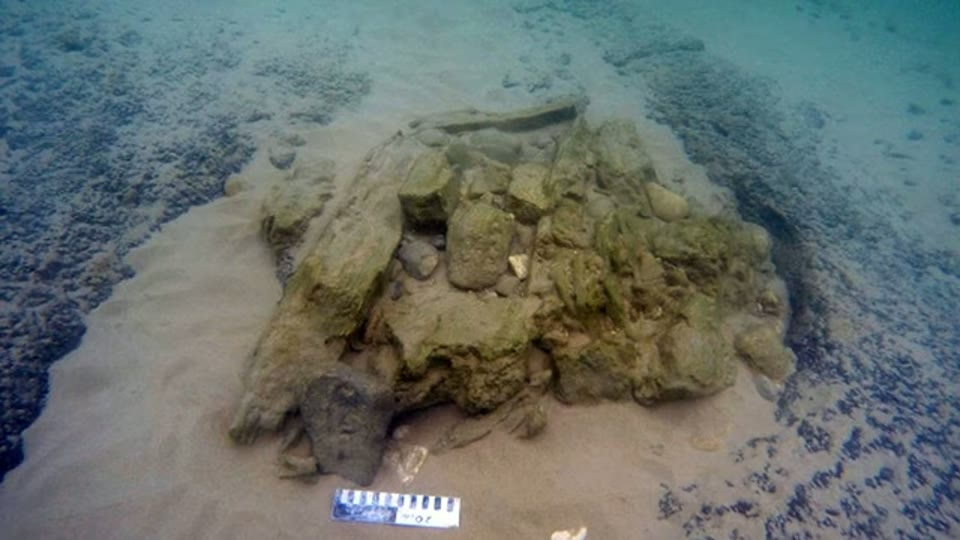

Curious Being
Picturing Human Civilization Between 12,000 to 6,000 Years Ago
Tina · 14 min · watch on YouTube · summarised 2026-09-27
The gap she wants to fill: our recorded civilisation is about 6,000 years old, and behavioural modernity — language, art, early religion — is usually put at about 40,000 years ago. That leaves a very long stretch in which people were, on the standard account, as capable as we are and left no civilisation behind.
She narrows to the most recent slice of it 01:01–01:39: 12,000 to 6,000 years ago, between the end of the Younger Dryas and the oldest known civilisation. Agriculture began, animals were domesticated, people settled in clusters and towns. "This could be considered the pre-cradle of civilisation."
The writing argument 01:39–02:20. The oldest written records are Sumerian cuneiform tablets about 6,000 years old, and they present an already sophisticated system. A writing system does not appear overnight, so either older records exist and have not been found, or they have been found and misidentified. "Absence of evidence is not evidence of absence."
What is actually there
02:20–04:47 Three things she offers for the period.
- Göbekli Tepe, in what is now Turkey: 15-ton megalithic pillars, dated to 12,000 years ago, worked on and expanded for 2,000 years before being deliberately buried. Her scale comparison she draws — 2,000 years is roughly the distance from Julius Caesar to the present, which is a long time for a single project to continue.
- An underground mine tunnel in Mexico, which she says runs over 200 miles.
- Tunnels reported in 2011 running from Scotland to Turkey and across Europe, maze-like, of unknown purpose, and dated to 12,000 years old; some read the narrow ones as aqueducts.
Her question is the reasonable one. People of that period are generally described as nomadic hunter-gatherers without permanent shelter — so how and why would they mobilise the labour for this? Monumental construction implies cooperation, design, engineering and a division of labour, and she suggests the pre-pottery Neolithic has been underestimated.

The site that makes the period a problem: monumental carved pillars 12,000 years old.
Plato
04:47–09:13 This is the half of the video that does not rest on evidence, and it takes up more of it than the half that does.
She works from Timaeus, written around 360 BC: Solon's conversation with an aged Egyptian priest, who tells him the Greeks keep losing their history to catastrophes while Egypt's is preserved. The priest dates the founding of Greece to 9,000 years before Solon's visit around 600 BC — so 11,600 years ago, just after the Younger Dryas — and Egypt a thousand years later, at 10,600. He describes recurring destructions by fire and water, many deluges, and the war between Atlantis and the states inside the Pillars of Heracles, ending with earthquakes, floods and the island sinking in a day and a night.
She does not argue for Atlantis and says so. What she takes from the passage is the social detail: states with armies, alliances, conquest, enslavement and liberation. From that she infers organisation — hierarchies, weaponry, food supply, systems of payment — and from that, the capacity to build something like Göbekli Tepe.
She notes the difficulty herself: the Egyptian records Plato's priest refers to would have been in the Library of Alexandria, burned in 48 BC, so the account cannot be checked against its claimed source.
The part that can be checked
09:13–11:52 Then she does something better: she takes one testable claim out of Plato — that there were many deluges rather than one — and goes looking.
- Sunken settlements around the Mediterranean are archaeologically documented, and she shows a map of them with their submersion dates. The region sits on plate boundaries and has a long record of earthquakes, tsunamis, landslides and eruptions.
- Atlit Yam, off Israel, dated 8,900 to 8,300 years old, which she reports was drowned by a tsunami from an eruption of Mount Etna.
- Tel Hreiz, also off Israel, where a 7,000-year-old sea wall was found — the oldest known anywhere. People that long ago were already building stone defences against a rising sea.
- The early Holocene sea-level rise, from about 11,700 to 7,000 years ago, during which sea level rose roughly 60 m. She adds that the loading may have increased volcanic activity and triggered submarine landslides, and therefore more tsunamis, and that the loss of coastal farmland would have driven migration — which is what Critias describes.

Her check on Plato's 'many deluges': drowned settlements around the Mediterranean, with dates.
The map is worth reading rather than glancing at. Nine sites are pinned, and five of them carry AD dates — Baiae, Kekova, Nabeul, Olous and Heracleion all drowned in the historical period, long after the window this video is about. Four are prehistoric: Pavlopetri at 4,800 BP, Tel Hreiz at 7,000, Atlit Yam at 8,900–8,300, and Tel Dor at 9,910–9,290 BP, the oldest on the map and the closest to her period, which she never mentions aloud.

The most concrete thing in the video: people building against a rising sea 7,000 years ago.
Her closing reading of Plato is the long passage about civilisations being reset:
…just when you and other nations are beginning to be provided with letters and the other requisites of civilized life, after the usual interval, the stream from heaven, like a pestilence, comes pouring down, and leaves only those of you who are destitute of letters and education; and so you have to begin all over again like children, and know nothing of what happened in ancient times.
Her proposal 12:53–13:35: sophisticated cultures existed 12,000 years ago, left the megalithic sites, operated like later dynastic kingdoms and had writing of their own — and lost it all repeatedly to catastrophe. Her image for the missing 6,000 years is a hard drive failing with no backup.
What you can check yourself
- Göbekli Tepe's dates, pillar weights and its 2,000-year span are published excavation results, as is the account of its deliberate burial.
- Atlit Yam is a real, excavated, published site with a date range, and the Etna tsunami proposal for its drowning is a specific hypothesis in the literature that can be read and weighed.
- The Tel Hreiz sea wall is published, and the claim that it is the oldest known is the kind of claim that can be checked against the record.
- The early Holocene sea-level rise is standard paleoclimatology — roughly 60 m between about 11,700 and 7,000 years ago — and the curve is reproduced in any textbook.
- The map of drowned Mediterranean sites is a real body of work, and anyone can look up the individual sites and their dates.
- The Sumerian tablets are dated and published, and whether the earliest examples already show a developed system is a question specialists argue in print.
- **Plato's Timaeus and Critias are short and in print.** Everything she reports from them can be read in an afternoon, including the parts she does not quote.
- The Library of Alexandria's fire in 48 BC is a documented event, though what was lost in it is not.
What the video does not settle
- Plato is a philosophical dialogue and is used here as testimony. The Atlantis account is a story inside a story: an Egyptian priest, reported by Solon, reported by Critias, written by Plato, about events supposedly nine thousand years earlier. The video reasons from its social details to the existence of organised states.
- A dating objection is applied to one source and not another, for the third time. In the brain sizes entry Herodotus is dismissed on the pyramids because he wrote two thousand years after Khufu; in the Osiris Shaft entry the Inventory Stela is accepted although it postdates Khufu by about nineteen centuries. Here the gap is roughly nine thousand years and it is not raised at all.
- The European tunnels claim has no source, no site and no dating method. It is presented as a 2011 discovery of 12,000-year-old tunnels running from Scotland to Turkey, and it is the only claim in the video with none of those three.
- The Mexican mine tunnel is unnamed and its length unsourced.
- "Absence of evidence is not evidence of absence" is doing load-bearing work. It is used to license the proposal that older writing existed, and nothing else is offered for it.
- Most of the drowned sites on her own map are from the wrong period. Five of the nine are dated AD — Roman and later coastal subsidence and earthquakes, not Neolithic flooding. The map is offered as evidence of "multiple ancient floods" in the 12,000 to 6,000 window and four of its pins fall inside it.
- What the catastrophe evidence establishes is that Neolithic people faced rising water. Drowned coastal settlements, a 60 m sea-level rise and a sea wall at Tel Hreiz. Nothing is offered that literate or state-organised societies existed before them.
- The claim that these cultures "had their own written languages" has nothing behind it and is stated in the conclusion as though it followed.
- "Rising sea level may have increased volcanic activity" is offered as speculation and nothing is cited for it.
- Mount Etna is in Sicily. Whether one eruption there would have reached coasts across the basin is not addressed.
- Her own dates for anatomically modern humans have moved. Here it is about 190,000 years ago; in the brain sizes video it is 300,000. Neither is sourced.
See also
The Change of Human Brain Sizes — the other half of the same puzzle: capable people, no civilisation to show for it.
Who Really Built the Megalithic Sites? — the timeline this video is filling in.
Was an Advanced Civilization Wiped Out by a 12,800-Year-old Comet at Younger Dryas? — the catastrophe she tested as the cause of the reset, and rejected.
An Eye-opening Interpretation on Göbekli Tepe "Handbags" & Vulture — the site here treated at length.
The Osiris Shaft — where the Inventory Stela is accepted on a gap she rejects Herodotus for.